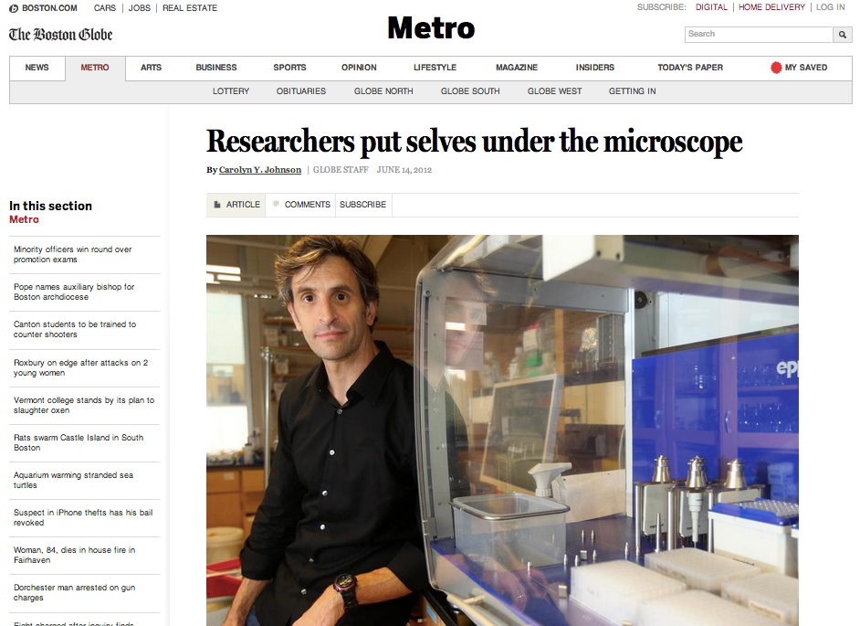

Researchers put selves under the microscope
Original source:
Boston Globe
June 14, 2012
By Carolyn Y. Johnson
When Eric Alm got food poisoning from eating the French toast special at a
restaurant three years ago, he was ecstatic. Congratulatory notes from
colleagues began to show up in his inbox.

The Massachusetts Institute of Technology scientist
was midway through a yearlong study of the communities
of microbes that live in his gut, and the food poisoning
offered an unexpected chance to analyze some
fascinating, if unpleasant, output.
Alm is among a small but growing cadre of scientists
who are using themselves as research subjects. They
are taking advantage of faster and cheaper technologies,
ranging from custom apps on smartphones to gene sequencing,
in order to monitor aspects of their behavior and biology in
unprecedented detail.
The public has embraced such devices as well, giving rise to a "quantified
self" movement in which people aiming to live healthier lives track their daily
activity and convert it into a rich data stream: fitness, food intake, sleep
cycles. But self-experimenters like Alm so fully transform themselves into
guinea pigs that their research has the potential to answer questions beyond the
self. His work has led to an intriguing finding about yogurt's effects on
health.
"I realized this would actually be amazing," said Lawrence David, a junior
fellow at Harvard University and former graduate student of Alm's who studied
the communities of bacteria that dwell in his own gut, looking for clues about
how they might be affected by alterations in diet, exercise, even mood. "We had
this capability to take all these measurements that even five years ago were
inconceivable."
Although self-experimentation has long been a part of science and medicine, most
major findings emerge from research on large populations, to ensure that a
result reflects a broader truth and is not just due to chance or quirks of a
particular individual.
In the dawning era where extremely detailed information can easily be gathered
about one person, however, scientists can watch a complicated biological process
unfold, such as the onset of food poisoning or the real-time response of a body
to an infection. It's like watching a movie instead of looking at a snapshot,
and from that experience they can gather valuable information about the process,
even if it is but one person's experience.
Earlier this year, Michael Snyder, a geneticist from Stanford University School
of Medicine, published in the journal Cell the results of one such
self-examination. He had his genome analyzed in detail, and over 14 months he
gave regular blood samples to track gene activity, proteins, immune factors, and
metabolites as, by chance, he developed type 2 diabetes.
"You could see what the body does....The genes turning on and the immune
system going on full alert and so forth. We've never had this scientific basis
of how we work," said Larry Smarr, a computer scientist at the University of
California, San Diego, who, while tracking his own body in detail, detected a
signal that turned out to be emerging Crohn's disease. "I think you're going to
have a revolution . . . that will lead to a golden age of new diagnostics and
therapies."
Now, Smarr is collaborating with other scientists and having his stool samples
analyzed to study in finer detail what the microbes in his gut reveal about his
condition and subtypes of Crohn's.
Such detailed individual information gains power when it is aggregated. Harvard
geneticist George Church leads the Personal Genome Project, in which hundreds of
volunteers are having their genomes sequenced and bacterial communities sampled,
to better understand how human traits and health are shaped by genes and the
environment.
"It is really about doing a lot of early experimentation with the notion that if
we gather telemetry, data about ourselves, maybe we can turn that into knowledge
and wisdom that can impact our health," said Dr. John Halamka, chief
information officer of Beth Israel Deaconess Medical Center and one of the
participants.
Those are inspiring words and an optimistic end goal, but the actual work of
science can be a lot less glamorous.
Alm and David were unable to find volunteers for their study of gut bacteria,
because it required participants to harvest and store a stool sample every day
and spend eight hours a week entering data.
So they volunteered themselves.
Alm agreed to give a talk abroad only if colleagues could find him freezer
space. Meanwhile, on weekends, David negotiated sample storage in his home
freezer with his very patient wife. On a trip to Mexico, he obtained a letter
from federal authorities to ensure customs officials would allow the samples in
his backpack into the United States.
Now, as Alm and David analyze results from 548 fecal samples and nearly 300
saliva samples, they've discovered that the communities of bacteria that dwell
in their guts are identifiably different from one another. Extreme events, such
as temporarily moving to Southeast Asia or getting salmonella, triggered
noticeable changes, but only salmonella caused long-lasting shifts in the makeup
of microbial communities in Alm's gut. The most exciting result appeared to be a
radical transformation of the landscape of David's gut microbes during a
two-week span when he ate lots of a particular kind of yogurt.
The scientists decided to see what would happen when they fed the same yogurt to
mice. But after that experiment was underway, they realized that there had been
a data mixup.
"We were in the middle of the study, thinking what a fantastic waste," Alm
said. But his MIT collaborator, immunobiologist Susan Erdman, had observed some
unexpected - even bizarre - changes in the mice. These were the shiniest mice
she had ever seen. The male mice appeared to have larger testicles. And they
were thinner than a comparison group of mice eating the same diet, minus the
yogurt.
The scientists took tissue samples, designed protocols similar to the ones
cosmetics companies use to quantify the shininess of the mice's fur, and weighed
their mice's testicles.
Now, they are focused on figuring out the mechanisms: how probiotic bacteria
found in yogurt could be having such effects.
Meanwhile, Alm is entertaining the possibility of putting himself under the
microscope again. He is getting interested in miniaturized devices that can
monitor in high resolution the presence of immune cells and hormones.